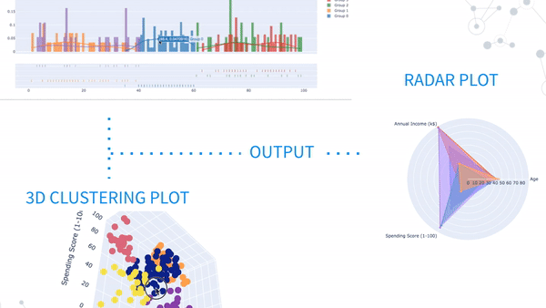

Machine Learning/Data Science Projects

Video Object Recognition
Python, Tensorflow
Use OpenCV for video/image processing and SSD MobileNet V1 Coco, a trained tensorflow model from TensorflowZoo, to identify objects from videos.
See Project
BizKit Python Package
Python, Bokeh
Implement customer segmentation script for BizKit, a Python package for streamlining business data mining tasks.
See ProjectNeural Network Implementation
Use NumPy package to implement a 2-layer and general L-layer neural network from scratch; utilize vectorization techniques.
Watch